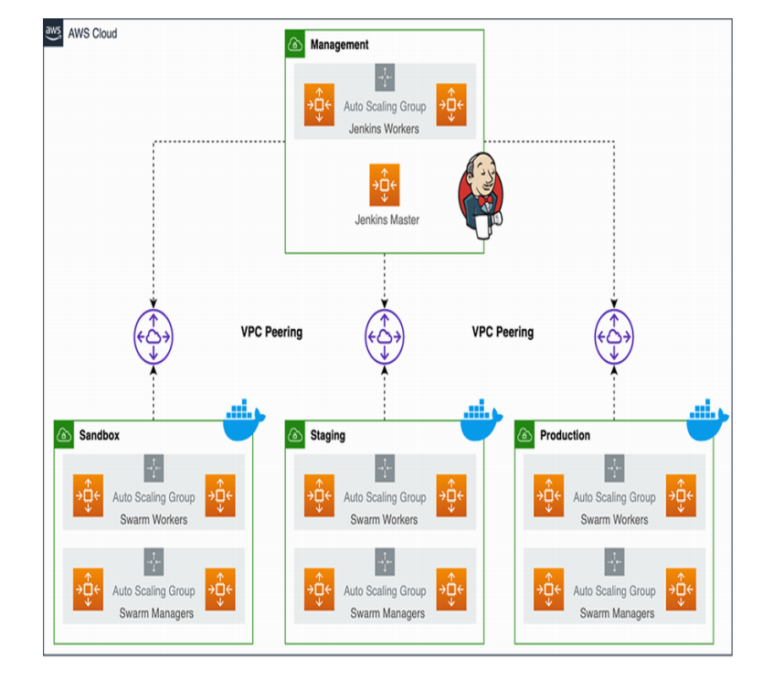
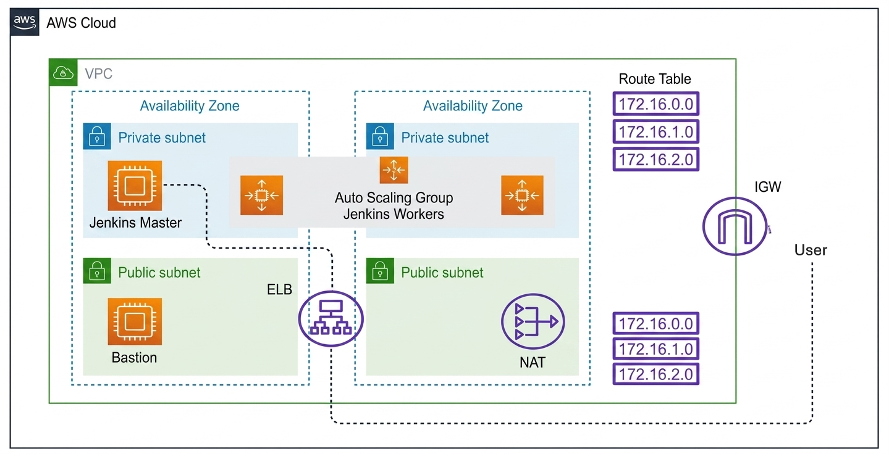
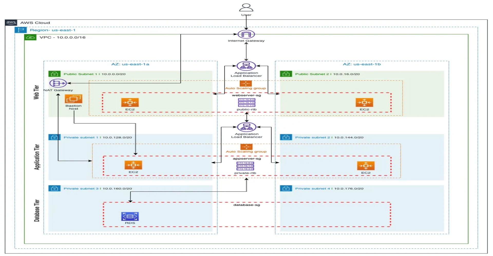
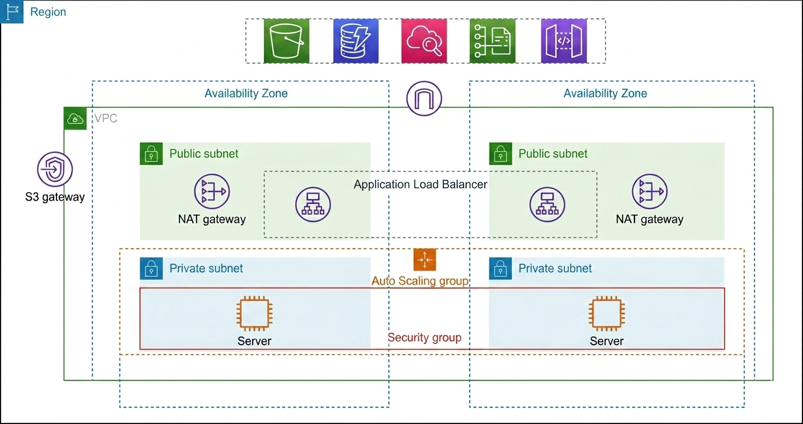
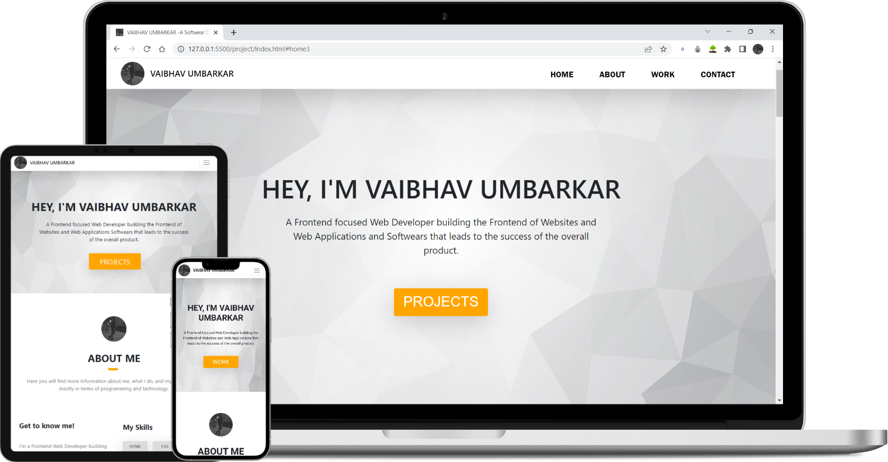

DevOps Engineer focused on AWS cloud infrastructure, Terraform-based automation, Jenkins CI/CD, and containerized deployments with Docker and Kubernetes. Interested in building reliable, scalable, and automated infrastructure.
Learn about my DevOps experience, cloud infrastructure projects,
automation workflows, and hands-on work with modern deployment technologies.
I'm a DevOps Engineer focused on AWS infrastructure, Infrastructure as Code, CI/CD automation, and containerization. I work with Terraform, Jenkins, Docker, Kubernetes, and Linux to automate infrastructure provisioning and application delivery. Explore the Projects section to see practical examples of my work.
I'm currently seeking full-time opportunities in DevOps and Cloud Engineering where I can contribute to infrastructure automation, deployment workflows, and reliable cloud environments while continuing to grow as an engineer. If you're hiring for a relevant role, please feel free to reach out.
Explore hands-on projects covering AWS cloud infrastructure, Terraform, CI/CD automation,
container orchestration, and highly available deployment architectures.

Designed a Jenkins-driven CI/CD workflow for microservices, using Docker Swarm and AWS to automate application builds and deployments across containerized services.

Designed a highly available Jenkins cluster on AWS with dynamic agents to support scalable CI/CD execution and improve build and deployment workflows.

Implemented an AWS 3-tier infrastructure architecture with a focus on separating application layers, improving availability, and supporting scalable deployments.

Provisioned highly available AWS infrastructure with Terraform, including an Application Load Balancer, Auto Scaling Groups, NAT Gateways, private EC2 instances, and multi-AZ networking.

A responsive portfolio website built to present my DevOps skills, cloud infrastructure projects, technical experience, and professional profile.
Have a DevOps or Cloud Engineering opportunity, collaboration, or technical project in mind? Send me a message and I will get back to you.
© Copyright . Made by Vaibhav Umbarkar